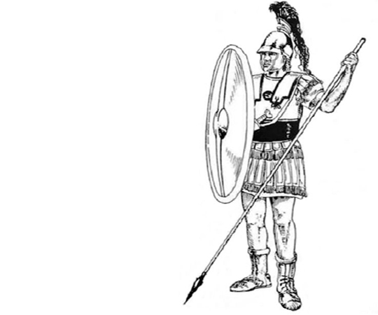

棋子走法
CHRSS WALKING

-8.png)
将军不离九宫内
将（帥）是棋中的首脑，
是双方竭力争夺的目标。
它只能在九宫之内活动，
可上可下，可左可右，
每次走动只能按竖线
或横线走动一格。
帅与将不能在同一直线上
直接对面，否则走方判负。

-8.png)
士止相随不出官
士（仕）是将的贴身保镖，
其作用就是保卫将帅，
所以士的走法是围绕将
在九宫格里一步步走，
可以进退，不能出九宫格。
士在象棋中占据米字中心，
最大威力就在米字中心，
沿着四角进退。
-8.png)
象飞四方营四角
象（相）的主要作用是防守，
保护自己的帅（将）。
它的走法是每次
循对角线走两格，
俗称“象飞田”。
相（象）的活动范围限于
河界以内的本方阵地，
不能过河，且如果它走的
田字中央有一个棋子，
就不能走，俗称“塞象眼”。
-8.png)
士止相随不出官
马走动的方法是一直一斜，
即先横着或直着走一格，
再斜着走一个对角线，
俗称“马走日”。
马一次可走的选择点
可以达到四周的八个点，
故有“八面威风”之说。
-8.png)
车行直路任西东
车（車）在象棋中威力最大，
无论横线、竖线均可行走，
边走边吃其他象棋，
直接就可以吃掉对方的棋子，
只要无子阻拦，步数不受限制。
一车可以控制十七个点，
故有“一车十子寒”之称。
-8.png)
炮须隔子打一子
炮的走棋规则是只能走直线
即前后左右走都可以，
只要前面没有棋子挡着。
移动与车完全相同。
当吃子时，己方和对方的
棋子中间必须间隔1个棋子
炮是象棋中唯一可以越子的棋。
唯卒只能行一步
卒（兵）走棋规则是只能往前
不能往后，而且只能走一格。
而且过河之前不可以左右走，
过河之后才可以左右走。
但也只能一次一步，即使这样，
兵（卒）的威力也大大增强，
故有“过河的卒子顶半个车”之说。
双方没有车的情况下，
要注意争夺兵（卒）。